Interactive Media Products
I oriented in relevant tech, media and design landscapes, created interactive media products and tested them with users, clients, and other stakeholders
Orient
In project one, I tried out different techniques for the brand identity of the client. In the first style I used a rusty, vintage, American look, in the second style, I used a neon-style.
What did I orient?
I oriented in different styles because we first made a rusty, vintage, American look, but then the client told us he wants to go with a neon-style after we did a feedback round.
How did I orient?
I oriented by trying out different design techniques in Adobe Illustrator. For the vintage look I used vectors that resemble rusty vintage surface. For the neon-style, I used different layers wit glow effecfts in Adobe Illustrator to make neon-lines.
Why did I orient like this?
I did this because the client was not happy with the first design iterations. After doing more orienting, the client was happy with the neon-style.

Relevant tech, media and design landscape
To make interactive media products I used applications that are modern and widely used by other people in
this industry. For digital UI/UX projects I used Figma, for branding I used the Adobe Creative Cloud
including Adobe Illustrator and Adobe Photoshop. To get informed what is currently fresh and trendy, I
used websites like Pinterest, Dribbble, and Behance.
Interactive Media Products
In this semester, I made a few interactive media products. One is for the health insurer ZEKUR. and the other one is my own portfolio.
ZEKUR. interactive media product
This project was provided by Hike One in Amsterdam. We got challenged to improve the user flow of a person signing up for a health insurance. I first researched competitors, analyzed the user flow, then did user tests, and then made an interactive prototype in Figma.

What did I do?
In this project I improved the userflow of ZEKUR.
How did I do this?
To improve the userflow of ZEKUR. I started of with analysis the userflow of the website. I walked through the sign up process like a potential client would do. I started at the homepage, went to the insurance page, chose my package, and entered my personal details. While I was doing this, I was writing down my findings in a documents including screenshots. After doing research and user tests,I knew what the users are looking for, so I started with making an interactive prototype in Figma. I finished these 2 pages and presented it to the client in Amsterdam.
Why did I do it like this?
Starting off with analysing the sign up flow was very important to find the painpoints of the website. Once I got these painpoints written down, as well as the positive points, I knew what to improve in the sign up flow. I made the interactive prototype in Figma, because that's the leading design tool for UI/UX.

My portfolio interactive media product
For my portfolio, I made a few interactive elements. For example, the dropdown menu, the hamburger menu, and the contact form. I made these elements with HTML, CSS, and JavaScript.

Tested with users and stakeholders
In this semester, I did multiple user tests. Mainly for the UX and Development project ZEKUR., but also
for my own portfolio.
ZEKUR. user tests
For this health insurer we improved an existing user flow, I tested the flow with the end users and I let them go through the process, I wrote down what I noticed, asked them questions during the process and after the process. I documented this in the Word Document below.


Portfolio user tests
To make sure my portfolio is user friendly for the target audience, I conducted multiple tests to find out if I can improve the user experience.


Development and version control
For this learning outcome, I explored front-end development languages, wrote code and documented it in a version control environment.
Front-end development languages
In this semester I learned alot about HTML, CSS and JavaScript. (more to come)
Document in a version control environment
In all web development projects I made use of Git and made sure the code is clear and accessible. For
example, I added code comments to explain the purpose and use of different HTML, CSS and JavaScript
parts, providing clarity to others and my future self. For every project, I also made a README file
where I explain details about the project and how to use it.
README Files
For all my development projects I made README files to detail what the project is about and to how to set it up.


Using Git
To track my progress and to have a smooth collaboration and version control I used Github. This allowed me to maintain the project's health by keping it organized and understandable.


Comments on Code
To make code readable, I commented parts of my code that needed explanation. Heres one example:

Navigation Feature
I coded a sticky navigation menu in html, css and JavaScript. This menu stays at the top of the page when scrolling for. When hovering over it, it opens and the uesr can click on the learning outcome they want to read. When clicked, it automatically scrolls to that specific learning outcome.
Learning outcome slider
I made a learning outcome slider in html, css and JavaScript. When scrolling with your scrollwheel, the slider slides. The user can click on a learning outcome to read more about it on the learning outcome page.
Project navigation Feature
I made a learning outcome slider in html, css and JavaScript. When scrolling with your scrollwheel, the slider slides. The user can click on a learning outcome to read more about it on the learning outcome page.
Font size feature
For the ZEKUR. redesign, I made a feature to change the font size. This improves the accessibility on the website. For example, older people can now increase the font-size to their liking. I made this feature with JavaScript. I made sure everything on the websites uses the same P, h1, h2, h3, a, button tags, so the JavaScript can easily change it.
Sticky receipt
For a better user experience, I made a sticky receipt feature. This receipt shows your current selected insurance, the price of each, and the total. It is always sticky to the top of your screen, so you always see it.
Iterative design
In learning outcome 3, I explored and used professional design tools and iteratively designed visual works.
Use professional design tools
I used industry standard tools in the Adobe Creative Cloud suite. Besides Adobe, I also made use of Figma which is the industry standard for UI/UX related projects.

Adobe After Effects
Adobe After Effects is a digital visual effects, motion graphics, and compositing software used for creating animations, special effects, and motion graphics for film, video, and multimedia projects.
Adobe Illustrator
I used this app to design media expressions like Logos, Posters, Stickers, and other branding elements. It's a great tool for designing printed matter.
Adobe Photoshop
Like the name already suggests, this tool is great for editing photos. In project 1 I often used this app to make mockups that I could present to the client.
Adobe Indesign
This tool is great for making books, magazines, and other printed matter. I used this tool to make the brand guide for Veneman en de Groot.
Figma
Figma is a great tool for UI/UX projects. I used this tool for project 1 and 2 to make wireframes, prototypes, UI/UX designs. This tool also is great for collaboration between people in my team.
Iteratively
When making the designs for the products, I made several options before I came to the final design. I
adjusted designs based on feedback from users, clients, peers and experts. Below are a few
examples.
Moodboard iteration
I started with a moodboard that resembles a "Bruincafe". I used brown colors to resemble the type of divebar the client often sings. After getting feedback on the moodboard from the client, we understood the client wanted to go with a neon-themed style. I made a new moodboard in this style and presented it to the client, which he liked more.

Stylescape iterations
So I started off with an American, vitange, rusty style, that also represents divebars, because in the beginning, thats what I thought the cliented was looking for. But we quickly learned the client was looking for a neon-theme, so we made a new stylescape to present to the client. This style the client liked better.

Stylescape iterations
We presented this iteration in an online Teams meeting, I wrote down feedback and improved the stylescape. The cliented wanted it to look less "party-like" and more "sad". The client also noted it looks too much like south european party stylescape. Something you would see on Ibiza for example, so in the next version, we made sure to include more Dutch references, removed the party images and added graphic elements to represent the sadness the client is looking for. The final stylescape is the style the client liked so we went on to to the design the brand with that stylescape in mind.

Logo design iteration
I started off with experimenting in Adobe Illustrator. After many variations I had a final logo for Venemand en de Groot. I asked feedback from other students and they told me the red/yellow logo colors don't fit with the brand and resembled the McDonald's colors too much. That's when I made new color variations.

Logo design iteration
After making new color iterations, I landed on a design with the colors of the Dutch flag, which the client was looking for. However, after presenting this to the client, the client told us he wants to go with a neon-style, so I started again with sketching and experimenting.

Logo design iteration
In the next logo design iteration we made a neon logo. I did some color experiments, but the client immediately liked the first version.

Portfolio iterations
After doing user tests with peers, I quickly found out the navigation bar wasn't very user friendly. Visitors had to constantly scroll up if they want to navigate to a different page, so I made the navigation bar sticky to the top.

Portfolio iterations
When doing another test on this new nav bar, testers told me the contrast is too low, so I added a dropshadow which activates when you scroll down. Now you can clearly see the difference between the nav bar and the page content.

Portfolio iterations
In assessment 2, Paul gave me feedback about the contact section. Paul told me the "Contact Me" text is too big compared to the contact button. I tested this and indeed many did not click on this contact button. So in a different iteration, I decided to increase the button size and the "Contact Me" text.

All iterations
Design visual works
I designed various visual works/media products, like merchandise, websites, presentations and more. When presenting this to the client, I am able to give reasons for my design decisions (e.g. colour choices, styles, etc. ).


Professional standard
In this semester I applied professional practice, both individually and in teams, in areas of project organisation, communication with stakeholders, exploratory research, and reporting.
Project Organisation
Together with my team, I set goals, created timelines, divided tasks among team members, and tracked progress.
What did I do?
I made sure the project was delivered on time and the collaboration between students in my team went smoothly.
How did I make sure the Project Organisation went well?
In the beginning of each project we made a plan in Trello or Notion. I assigned roles to each person, we disussed who is good in which part of the project, and we discussed timelines. I also made sure we have rules about coming in late, so everyone in the group knows if someone is in the school or not.
Why did I do the Project Organisation like this?
In the last semester I noticed its important to have a good chemistry and plan well. If you don't do it the quality of your project will go down or you will not be able to finish it at all.
Reflection on Notion and Trello
In project 1 I used Notion together with my teammates. I found Notion to be too complex, because it had a lot of text and different sections. Beause of the design, it made me feel like im using a digital planner from 2008, which I didn't like. I am a big fan of simplicity so I switched to a much easier to use Trello. Trello has less text and sections compared to Notion which I found to be very nice.
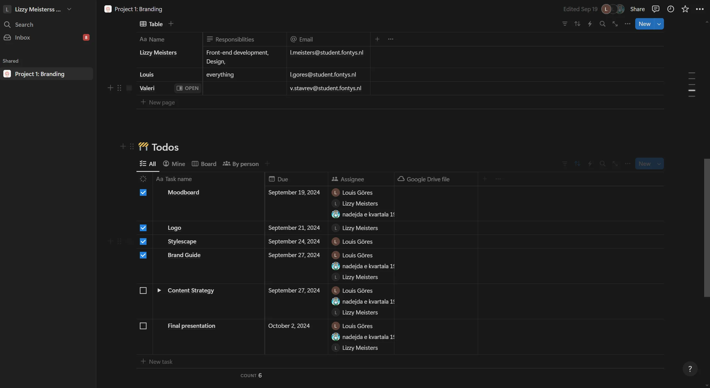
Communication with Stakeholders
Communicating with stakeholders is very important in every project. I had regular contact with our client
in project 1 about the project. To show our progress and gather feedback, I had 2 meetings with the
client. One online on Teams and one in person as a presentation.
What did I do?
I regularly updated the client in online meetings and communicated through Teams.
How did I communicate with the stakeholder?
In the beginning of the semester, Woody told us to contact him on Teams if we need something. So I made sure to regularly contact Woody on the progress of our branding project. I scheduled meetings with the client on Teams and presented our work in person.
Why did I communicate like this?
Communicating in Teams is very easy for me and the clients. I could easily schedule an online Teams meeting where I could present our progress. The client then gave us feedback which I wrote down on my laptop. This was a very efficient way of communicating with my stakeholder.
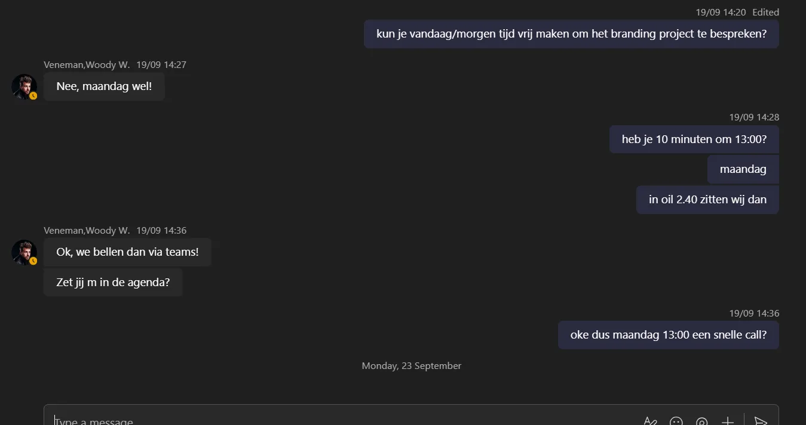Presenting to clients
For project 2, I presented the final branding to the client. I made a professional presentation that told a story from start to end and presented it in person.
 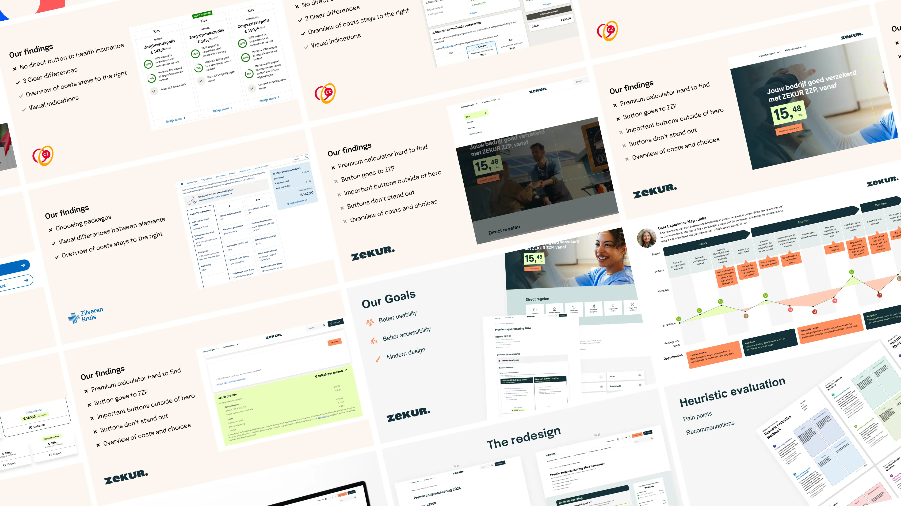
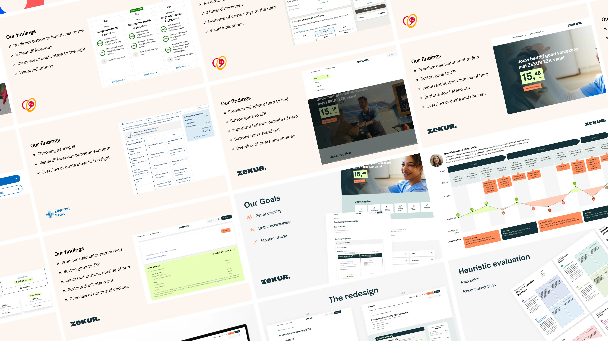
Exploratory Research
For project 2, I researched the current flow of a person visiting our client website zekur.nl to find out what the bottlenecks are and how we can improve the UI/UX.
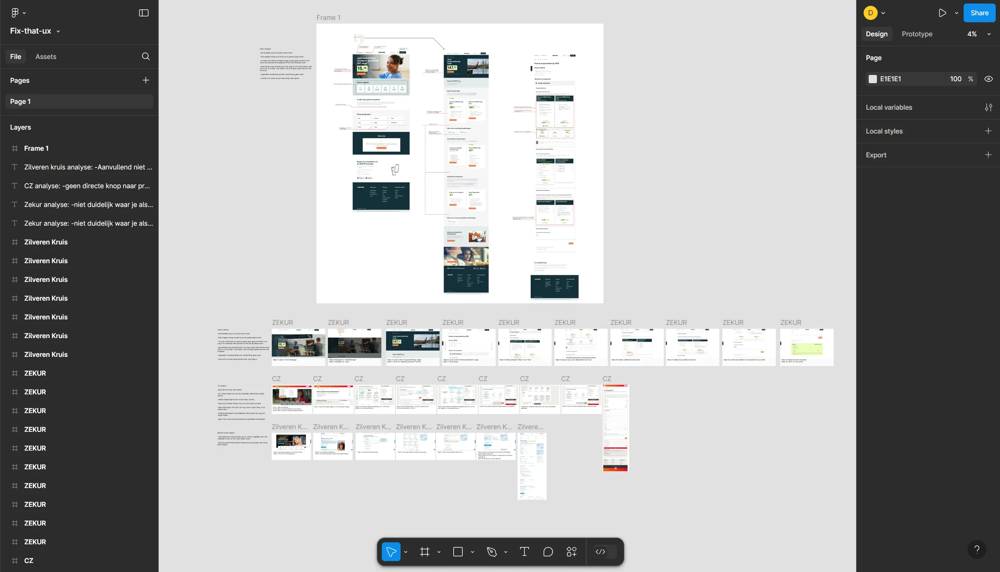Personal Leadership
For this learning outcome, I took the initiative in asking for, and reflecting on feedback. I also identifed by own core values as the basis for my study career and professional development.
Taking the initiative in asking for, and reflecting on, feedback
In project 1, I have been actively asking the client for feedback about my progress on the new branding for Veneman en de Groot. I did this on Teams, but also in person. In the screenshots below, you can see me actively taking initiative to ask feedback.
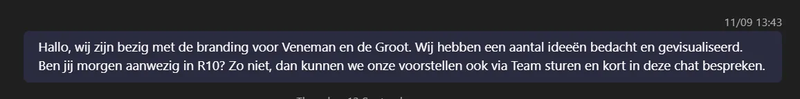 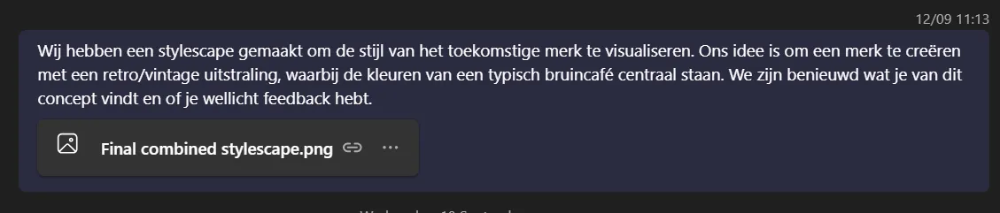 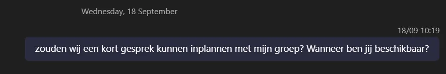 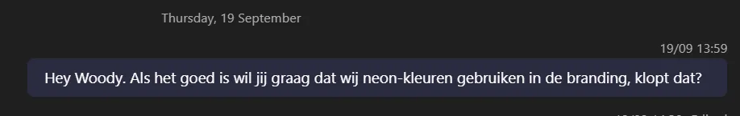 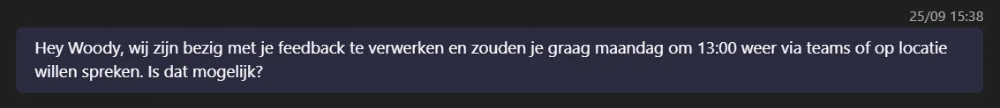
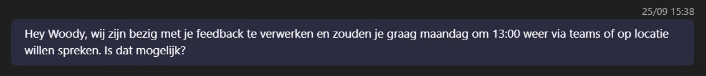
Feedpulses
I actively took the initiative to ask for feedback. I reflected on the feedback I got in feedpulse. I did this for my own personal Portfolio and personal development, but also for the group projects.
Group Project 1 feedpulses


Reflection on Project 1
Unfortunately, the group chemistry was very bad, because one person did nothing and the other person did not communicate well. Because of this, I was the only person putting in work and being in the OIL to work on the project. I never got the opportunity to work together as I did it all myself. But I guess thats also part of personal leadership/professional standard.
What can I do better?
In the next group project I am going to communicate in a better way with my collegues in my group. I hope the chemistry will be better so its also fun to work together. When I start in the next group project we are going to write down rules and discuss each other skills so everyone can focus on what they are good at.

Group Project 2 & 3 feedpulses
The chemistry in this group was better, we communicated with each other, made plans, worked together and delivered good work.


Personal Feedpulses
I took the initiative to ask feedback. After getting feedback from one of the teachers I wrotethe feedback down and put it in a feedpulse


Identifying your own core values
This semester, I have learned more about my core values, which have helped me in both my studies and
professional development. One of the values I find most important is continuous improvement. I now
understand that learning is something that never stops, and asking for feedback is a big part of getting
better. I make sure to ask for feedback from my peers, teachers, and clients, and I see this feedback as
a way to improve my work. Thinking carefully about this feedback has helped me grow and improve.
Another value that has become important to me is being true to myself. I believe it’s important to be
authentic in my work and the way I present myself as a professional. Whether I continue in Media Design
or take another path, I want my work to reflect who I really am. By understanding my strengths and
working on my weaknesses, I am creating a professional identity that feels honest and real.
This growth has also shaped the kind of professional I want to become. I aim to be someone who not only
does great work but also stays open to learning and stays true to myself. By asking for feedback and
using it to improve, I make sure I am always growing. And by staying true to my core values, I remain
authentic in everything I do.
Fontys ICT Career Day
I visited the Fontys ICT Career Day to further research what my professional career in the future could look like. I walked through the building and visited many presentations about different things. The one I found interesting was Advanced Media Design. I learned this is more about researching, which I also find interesting. It is good to know this exists and I might do this in the near future.
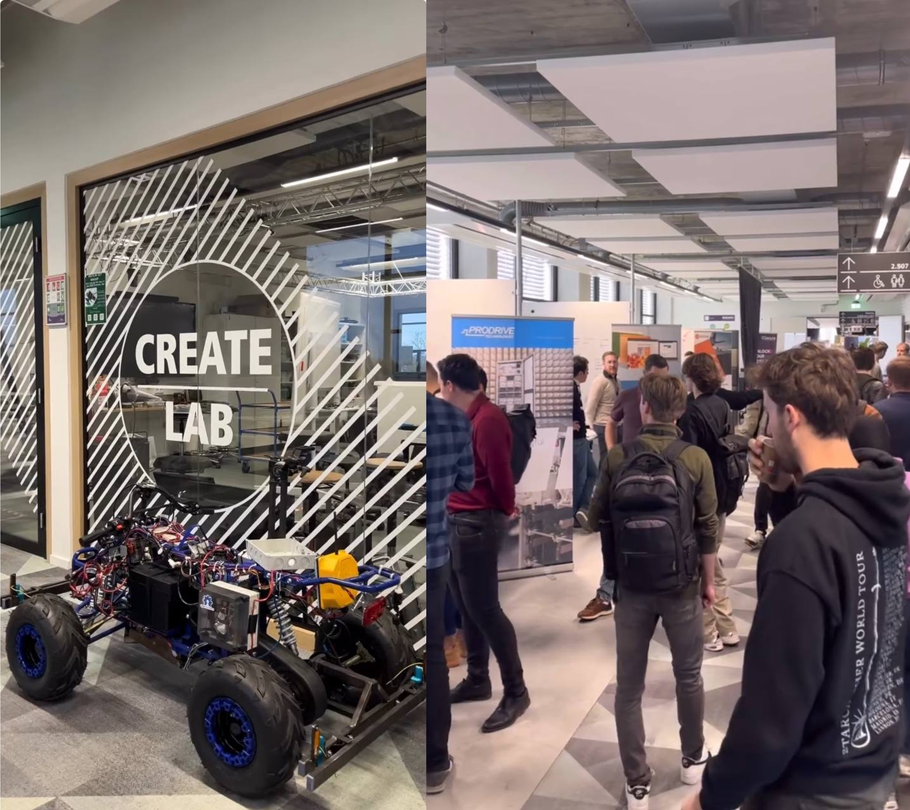I decided to take a personality test to reflect on my progress this semester and gain a deeper understanding of myself. This semester has been a period of growth and self-discovery, and I felt it was important to pause and evaluate where I stand in terms of my personal and professional development. The test offered a structured way to explore my traits, strengths, and areas I can work on. By identifying my personality type, I hoped to better understand how I approach challenges, interact with others, and make decisions. This insight is particularly valuable as I work on aligning my actions with my core values and goals. I also wanted to use the results to gauge whether I’m growing in the areas I’ve been focusing on, such as leadership, communication, or adaptability. Additionally, the process provided a chance to reflect on how my personality influences my learning and progress, helping me stay intentional about the changes I want to make moving forward.